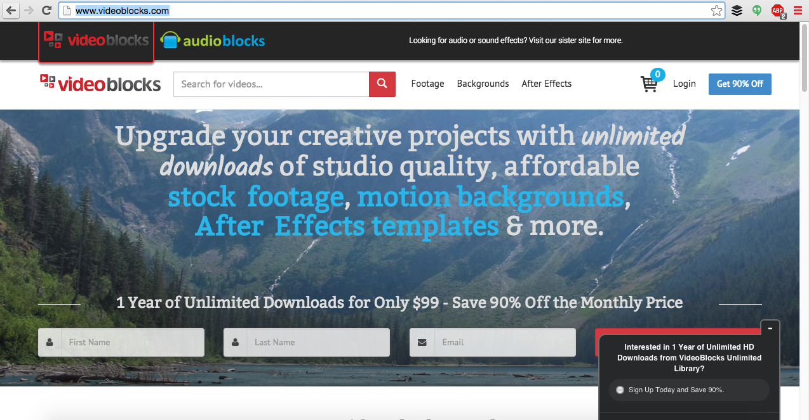
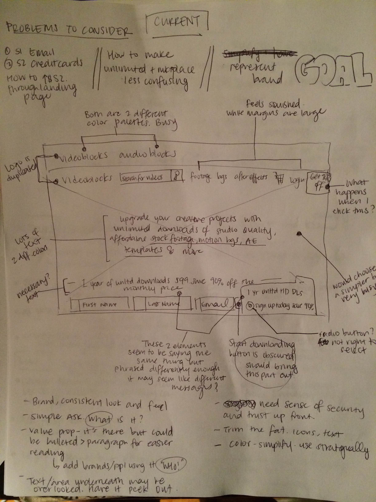
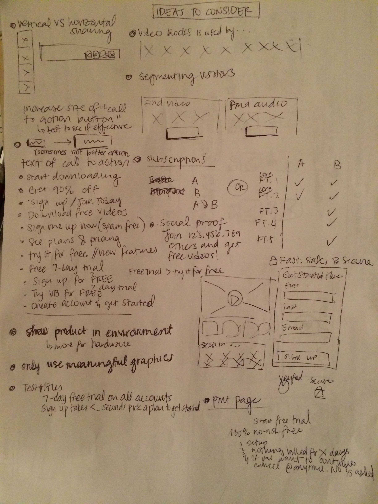
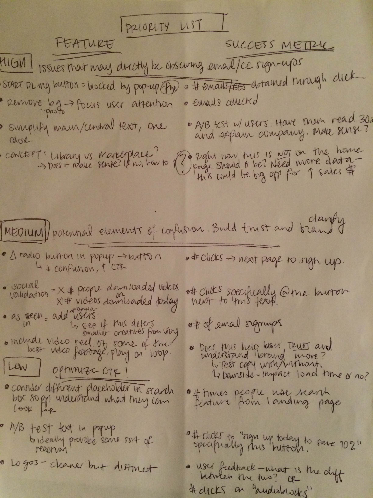
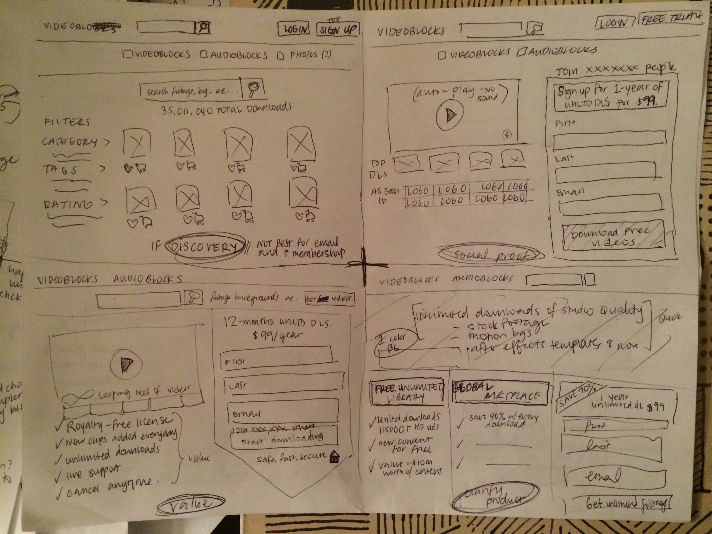
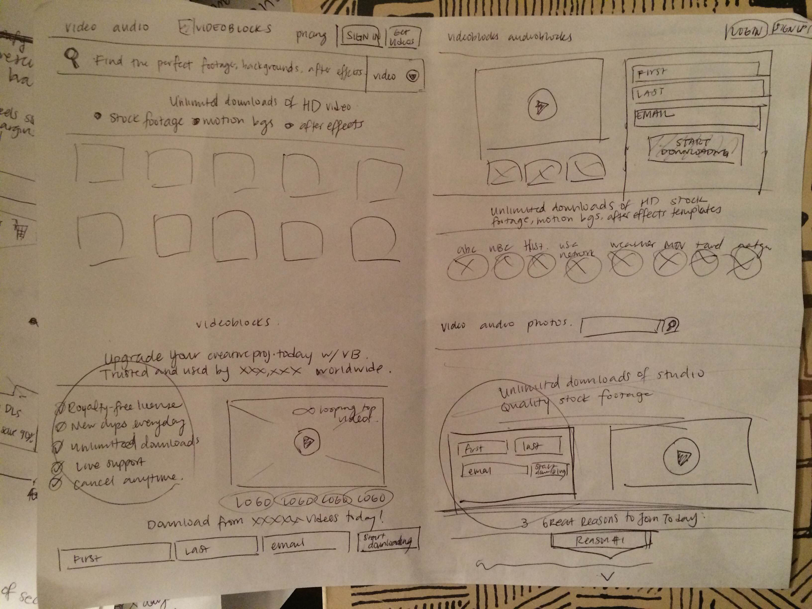

Project: How would you design the landing page to focus on increasing the number of VideoBlocks members who have both signed up and input payment for content?
My role: UX Research, UX, Wireframing, Project Management
Where and when: October 2015
VideoBlocks is sells subscriptions to unlimited downloads of studio quality, royalty-free stock footage and audio content for creatives. The company has multiple channels of revenue with millions of downloads available for video, stock images and audio. The challenge is that there are X number of people who sign up for VideoBlocks and Y number of people who take it a step further to input payment information and actually subscribe to or purchase content from the site. Currently X > Y and we want to increase sales by increasing Y. While I do not have the exact data, VideoBlocks garnered $13 million in revenue in 2013, more than 30 million downloads and a team of 30 employees and has continued to grow over the past few years. The landing page clearly works and converts visitors very well, but there is always room for improvement.
For the scope of this analysis, we will only focus on the landing page elements available above the fold. As it is today, the site prominently features a backdrop of scenic outdoor footage, an immediate preview to the type of high quality video clips available. There are currently 3 opportunities to convert the user (top right button in blue, bottom right button in red and the popup in the bottom right corner). VideoBlocks explains its value proposition with large text in the center of the page, emphasizing its products (stock footage, motion backgrounds and After Effects templates) in blue.
I began the assignment by quickly sketching out the layout of the current navigation page. The site has been well designed but there are some elements in terms of color, branding, copy and layout that can be improved. I wrote down all of my initial thoughts, comments and questions I had on how the landing page could be improved.
After having certain elements of the VideoBlocks landing page in mind, I did research on competitor stock footage and video companies and different types of landing pages to learn more about best practices.
Other stock video, graphic or audio companies I looked at to compare design and understand how they presented their products and encouraged users to sign up and purchase products. Some of my favorite aspects of each site:
I noted the common threads of successful product and marketplace landing pages rand sketched out as many elements that reminded me of VideoBlocks that could contribute to the final solution.
Based on all of the ideas and inspiration I gathered from these resources, I created an itemized to do list. In tandem, I also thought about how I would measure each change. With a rough priority list, ideally you could then break each element down and test them separately. It is not best to implement a ton of changes at once. I would choose 1-2 items to A/B test to see which had more "success" in how we defined it and then work with the development team to implement.
Here, I came up with different ways to visualize the priorities I listed. I wanted to try different ways to arrange the information while keeping the goal in mind of increasing that "Y" number: members who sign up and input payment information through the website.
 After studying the different options, I pulled elements together that I thought would tackle the priorities most clearly and began laying it out through wireframes in Adobe Illustrator. I also chose this layout because it was not a complete overhaul of the current website.
After this portion, we would likely do The second image conveys the next step I would take to bring